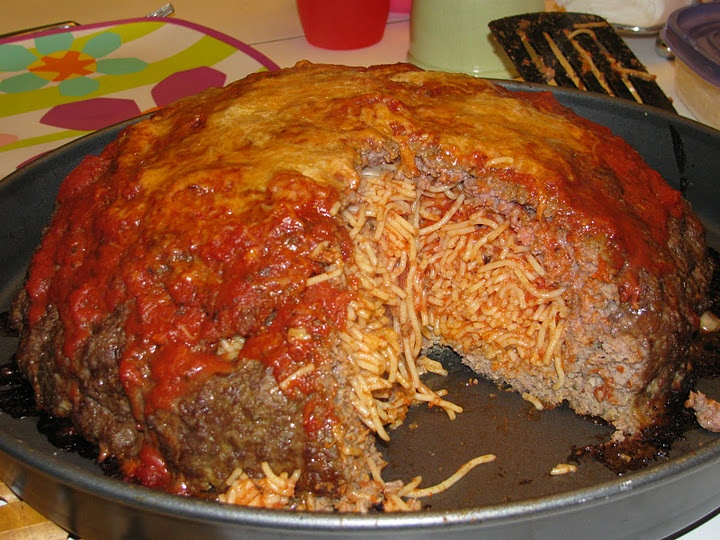

A SPICY A-MEAT-A-BALL

A delicious meatball (singular) with spaghetti (and booze) inside
Ingredients:
You will need:
- One 750 ml bottle of smirnoff
- one metric ton of ground beef
- two boxed spaghetti (really any noodle you want)
- one a-ketchup
- two a-mustard
- one kraft macaraoni and cheese box
- nine sticks of butter
- one Momma-Mia
- a strong stomach
Steps:
- Get out your sauce pan and start boiling water
- Put in spaghetti and cook untill limp and lifeless
- Gather all of the spaghetti in a big pile
- Make a big circle of ground beef in a circular shape and plot spaghetti pile into it
- Drench spaghetti in smirnoff between sips of it (you'll need it)
- Encase spaghetti in meaty prison
- Take out extra large pot
- Melt all nine sticks of butter in the pot
- Squeeze out all ketchup into pot
- Squeeze out all mustard into pot
- Take out the cheese packet. Shake out a nice line of orange dust on to the coutner. Open your nose and do a line.
- Empty rest of container of cheese packet into ketchup and mustard goop.
- Burn the fuck out of it (lol)
- Stick meatball spaghetti mess onto a cookie sheet
- Drink more smirnoff
- Preheat oven to 500 farenheit then bake for 3 hours
- Take meatball out of oven and drench in goop.
- Mama beat you for ruining her kitchen
- Drink to old country
- Enjoy spicy a meat-a-ball
- Repeat
Congratulations! You have made ONE A-SPICY-SPICY-A-MEAT-A-BALL!